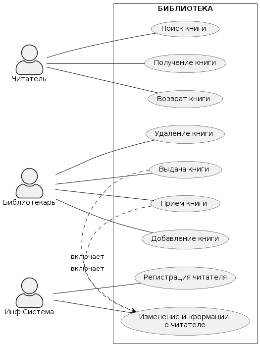

Практическая работа №1
Модельно-ориентированный подход к проектированию
Вариант №2
Задание:
Информационная система библиотеки Обзор: информационная система библиотеки позволяет искать книги в своем каталоге, учитывать выдачу книг на руки и возврат книг, а также позволяет добавлять книги в каталог и списывать их.
Порядок выполнения практической работы
Построить UML-диаграмму вариантов использования, диаграмму классов проектируемой информационной системы в соответствии с вариантом задания, а также диаграмму последовательности для наиболее часто используемых прецедентов. При построении диаграммы классов нужно добиться достаточной детализации информационной системы. Убедитесь в том, что использовали отношения dependency, aggregation/composition, generalization, описали размещение классов по пакетам проекта.
Рекомендации по разработке диаграмм вариантов использования
- Диаграмма вариантов использования может служить основой для согласования с заказчиком функциональных требований к системе на ранней стадии проектирования.
- Рекомендуемая последовательность действий:
- Определить главных или первичных и второстепенных актеров
- Определить цели главных актеров по отношению к системе
- Сформулировать основные варианты использования, которые специфицируют функциональные требования к системе
- Упорядочить варианты использования по степени убывания риска их реализации
- Рассмотреть все базовые варианты использования в порядке убывания их степени риска
- Выделить участников, интересы, предусловия и постусловия выполнения выбранного варианта использования
- Написать успешный сценарий реализации выбранного варианта использования
- Определить исключения или неуспех в выполнении сценария варианта использования
- Написать сценарии для всех исключений
- Выделить общие варианты использования и изобразить их взаимосвязи с базовыми со стереотипом <
> - Выделить варианты использования для исключений и изобразить их взаимосвязи с базовыми со стереотипом <
> - Проверить диаграмму на отсутствие дублирования вариантов использования и актеров
Ход работы
- Главные актеры: Библиотекарь, Читатель.
- Цели главных актеров:
- Библиотекарь: добавлять книги в каталог, учитывать выдачу и возврат книг, списывать книги из каталога;
- Читатель: искать книги в каталоге, брать книги на руки и возвращать их в срок.
- Основные варианты использования:
- Поиск книг в каталоге;
- Выдача книг на руки;
- Возврат книг;
- Добавление книг в каталог;
- Списание книг из каталога.
- Упорядочение вариантов использования по степени убывания риска их реализации:
- Поиск книг в каталоге;
- Выдача книг на руки;
- Возврат книг;
- Добавление книг в каталог;
- Списание книг из каталога.
- Рассмотрение базовых вариантов использования в порядке убывания их степени риска.
- Выделение участников, интересов, предусловий и постусловий выполнения выбранного варианта использования.
- Написание сценариев

- Проверка диаграммы на отсутствие дублирования вариантов использования и актеров.
Результат
Контрольные вопросы:
- Что такое UML? Какие вы знаете основные диаграммы UML?
UML (Unified Modeling Language) - унифицированный язык графического моделирования, который используется для описания и проектирования программных систем
Основные диаграммы в порядке построения:
- диаграмма прецедентов (показывает функциональные требования к системе, описывает, как пользователи будут взаимодействовать с системой),
- диаграмма классов (используется для моделирования структуры системы, показывает классы и их отношения),
- диаграмма объектов,
- диаграмма последовательностей,
- диаграмма кооперации,
- диаграмма состояний,
- диаграмма активности,
- диаграмма развертывания.
- Какие элементы входят в состав диаграммы классов?
- Классы - показывают структуру объектов системы.
- Атрибуты - определяют характеристики класса.
- Методы - определяют поведение класса.
- Интерфейсы - определяют способы взаимодействия классов.
- Отношения - показывают связи между классами, такие как композиция, агрегация, наследование и др.